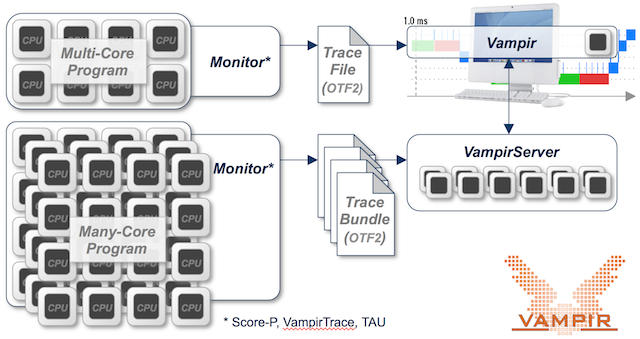
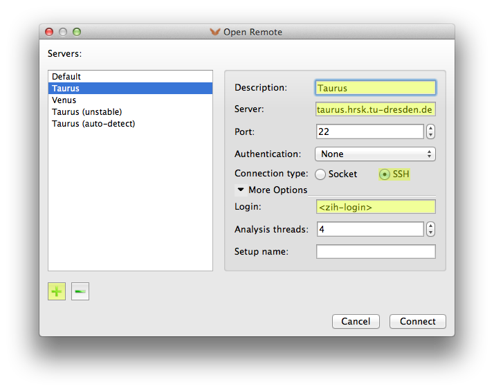
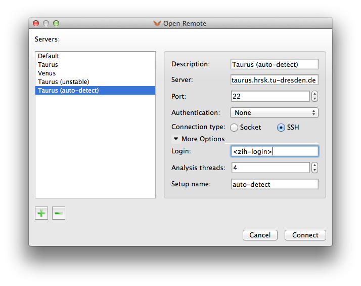
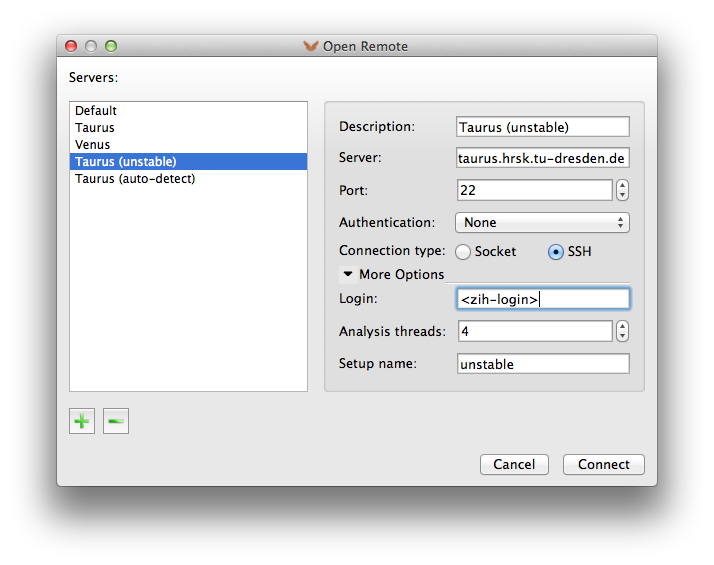

Study Course of Events with Vampir#
Introduction#
Vampir is a graphical analysis framework that provides a large set of different chart representations of event based performance data generated through program instrumentation. These graphical displays, including state diagrams, statistics, and timelines, can be used by developers to obtain a better understanding of their parallel program inner working and to subsequently optimize it. Vampir allows to focus on appropriate levels of detail, which allows the detection and explanation of various performance bottlenecks such as load imbalances and communication deficiencies. ZIH’s Vampir overview page gives further information.
Score-P is the primary code instrumentation and run-time measurement framework for Vampir and supports various instrumentation methods, including instrumentation at source level and at compile/link time. The tool supports trace files in Open Trace Format (OTF, OTF2) that is developed by ZIH and its partners and is especially designed for massively parallel programs.

{: align=”center”}Starting Vampir#
Prior to using Vampir you need to set up the correct environment on one the HPC systems with:
marie@login$ module load Vampir
For members of TU Dresden the Vampir tool is also available as download for installation on your personal computer.
Make sure, that compressed display forwarding (e.g., ssh -YC taurus) is
enabled. Start the GUI by typing
marie@login$ vampir
on your command line or by double-clicking the Vampir icon on your personal computer.
Please consult the Vampir user manual for a tutorial on using the tool.
Using VampirServer#
VampirServer provides additional scalable analysis capabilities to the Vampir GUI mentioned above. To use VampirServer on the ZIH Systems proceed as follows: start the Vampir GUI as described above and use the Open Remote dialog with the parameters indicated in the following figure to start and connect a VampirServer already instance running on the HPC system. Make sure to fill in your personal ZIH login name.

{: align=”center”}Click on the Connect button and wait until the connection is established. Enter your password when requested. Depending on the available resources on the target system, this setup can take some time. Please be patient and take a look at available resources beforehand.
Advanced Usage#
Manual Server Startup#
VampirServer is a parallel MPI program, which should be started by typing:
marie@login$ vampirserver start
Launching VampirServer...
Submitting slurm 30 minutes job (this might take a while)...
This way, a job with a timelimit of 30 minutes and default resources is submitted. This might fit your needs. If not, please feel free to request a customized job running VampirServer, e.g.
marie@login$ vampirserver start --ntasks=8 -- --time=01:00:00 -- --mem-per-cpu=3000M
Launching VampirServer...
Submitting slurm 01:00:00 minutes job (this might take a while)...
The above vampirserver command automatically allocates its resources via the respective batch
system (, i.e. Slurm on ZIH systems). As shown, you can customize
the resources requirements and time limit. This is especially useful, if you run into performance
issues handling very large trace files. Please refer to vampirserver --help for further options
and usage.
If you want to start
VampirServer without a batch allocation or from inside an interactive allocation, use
marie@compute$ vampirserver start srun
After scheduling this job the server prints out the port number it is serving on, like Listen port: 30088.
Connecting to the most recently started server can be achieved by entering auto-detect as Setup
name in the Open Remote dialog of Vampir.

{: align=”center”}Please make sure you stop VampirServer after finishing your work with the front-end (File → Shutdown Server…) or with
marie@login$ vampirserver stop
Type
marie@login$ vampirserver help
for further information. The user manual
of VampirServer can be found at doc/vampirserver-manual.pdf in the installation directory.
Type
marie@login$ which vampirserver
to find the revision dependent installation directory.
Port Forwarding#
VampirServer listens to a given socket port. It is possible to forward this port (SSH tunnel) to a remote machine. This procedure is not recommended and not needed at ZIH. However, the following example shows the tunneling to a VampirServer on a compute node.
Start VampirServer on the ZIH system and wait for its scheduling:
marie@login$ vampirserver start
Launching VampirServer...
Submitting slurm 30 minutes job (this might take a while)...
salloc: Granted job allocation 2753510
VampirServer 8.1.0 (r8451)
Licensed to ZIH, TU Dresden
Running 4 analysis processes... (abort with vampirserver stop 594)
VampirServer <594> listens on: taurusi1253:30055
Or choose from an already running VampirServer:
marie@login$ vampirserver list
594 taurusi1253:30055 [4x, slurm]
Open a second console on your local computer and establish an SSH tunnel to the compute node with:
marie@local$ ssh -L 30000:taurusi1253:30055 taurus
!!! important “SSH command”
The previous SSH command requires that you have already set up your [SSH configuration
](../access/ssh_login.md#configuring-default-parameters-for-ssh).
Now, the port 30000 on your desktop is connected to the VampirServer port 30055 at the compute node
taurusi1253 of the ZIH system. Finally, start your local Vampir client and establish a remote
connection to localhost, port 30000 as described in the manual.
marie@local$ vampir
Remark: Please substitute the ports given in this example with appropriate numbers and available
ports based on the output from vampirserver start or vampirserver list.
Nightly Builds (unstable)#
Expert users who subscribed to the development program can test new, unstable tool features. The
corresponding Vampir and VampirServer software releases are provided as nightly builds. Unstable
versions of VampirServer are also installed on the HPC systems. The most recent version can be
launched/connected by entering unstable as Setup name in the Open Remote dialog of Vampir.

{: align=”center”}